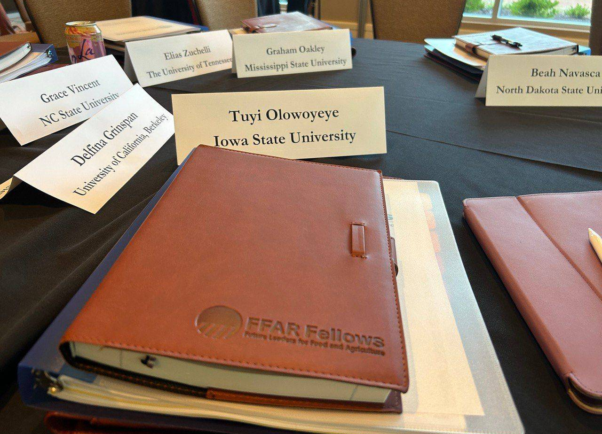
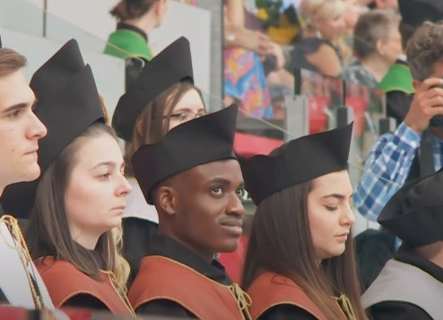
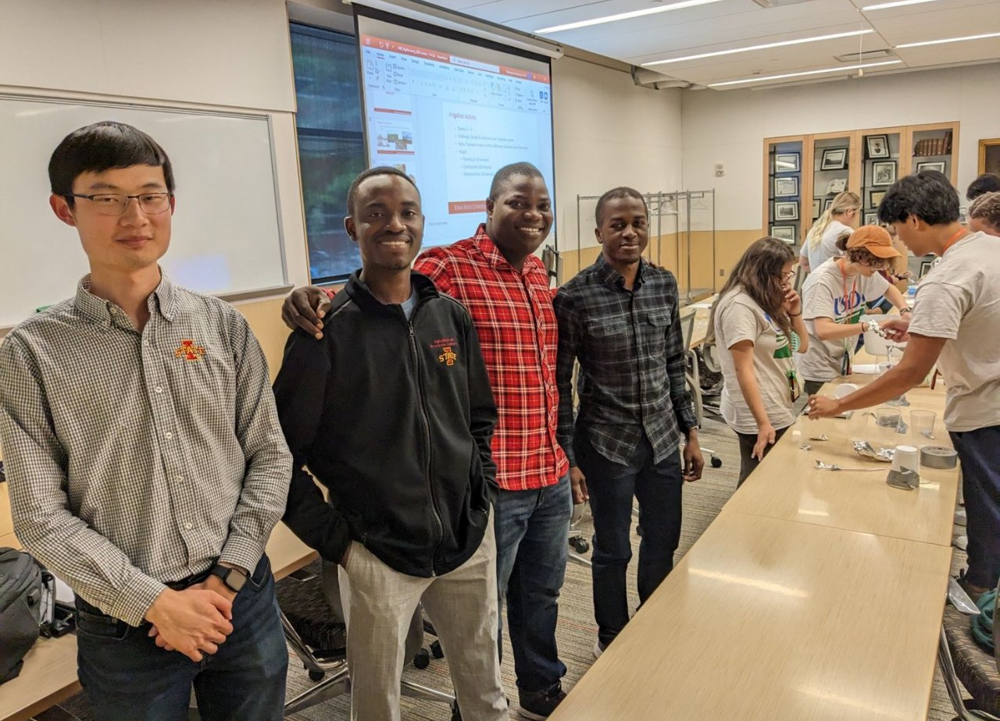
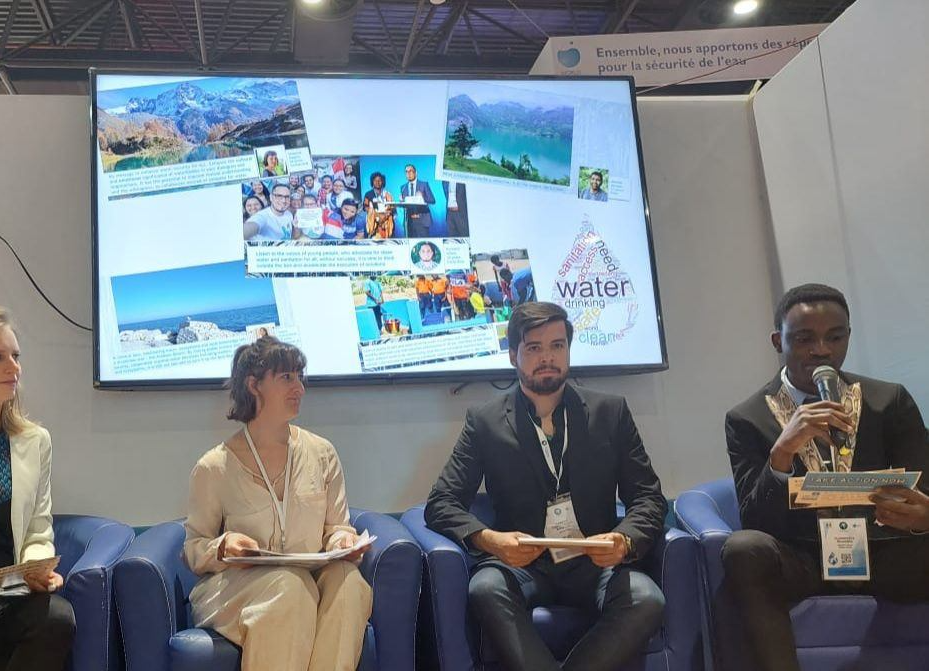
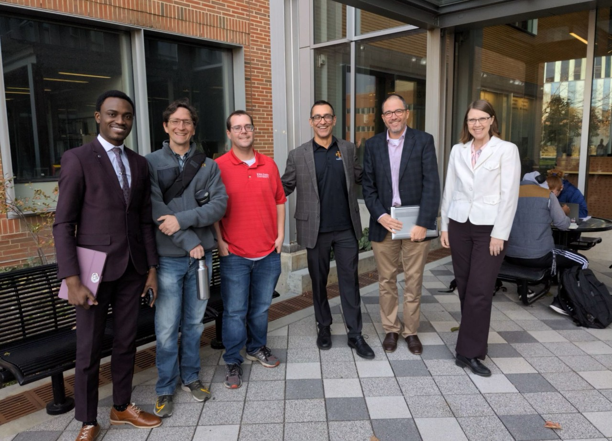

Ph.D. Candidate- Process-Based Modeler - Spatial Data Analyst- FFAR Fellow
PROJECT/ACHIEVEMENTS





FFAR Fellow
To be trained as a leader through a professional development and career guidance specifically in two of the five key challenge areas of FFAR: Soil Health and Sustainable Water Management.
University of Debrecen Graduation
The University of Debrecen was more like a BOOTCAMP to me! I graduated with a perfect GP of 5.0 and I can’t be any less grateful to the shepherd of my soul.
Final Note!
You can be a pundit in the classroom and still be a business mogul.
You can make more money online without the demands of the work affecting your schedule on campus.
You can be a political juggernaut and it would still not upend your academic journey on campus.
You can garner skills that would set you in the tone of every recruiter or help you to start that big thing that would shake the world at large.
You can pursue destiny, serve God without holding back and remain a major force to be reckoned with in your world.
As an undergraduate, I was just busy chasing after academics, in the end, I didn’t even finish with a first class. I was just oblivious of many opportunities that were available at my disposal right there on campus. This is the hard truth, there are certain things you would wish you’d learn why you were on campus, but it may be too late.
I am not saying you shouldn’t pursue your academics, but what you need is simply BALANCE and the right information at the right time.
Fast forward, to my master’s program both the one I just finished here and the one I didn’t complete back at home before I landed a fully-funded scholarship to study here in Hungary, I can say I didn’t waste any opportunity that crossed my path, I was also intentional about acquiring skills.
I graduated from the prestigious University of Debrecen with a perfect GPA of 5.0, capped with special honors. This time around, I’d many more things I took up as a challenge, accepted volunteering roles, embraced the opportunities to skill-up anywhere at any time, dared two major competitions and my team was a finalist in one of them, I offered to help people for free (This one didn’t leave me the same), above all, I took destiny very seriously.
Mentor, USDA Ag Discovery
Facilitated sessions with high school students on agricultural engineering and their unique
contributions to the society
Provided guidance to students on career choices in Agricultural engineering and their
implications to the society
Guided them on the design and development of an irrigation systems that transport water through 3 feet length of pipe and delivers that into three separate tanks
World Water Forum
Largest International Water Conference in the World
Ph.D. Prelims
Passed Ph.D. Preliminary exams both rigorous written and oral examinations.
ABOUT
As a research-driven leader, I spearheaded a pivotal role in leading rainfall simulation studies, a key component of an Iowa State Water Security initiative. Within the lab, I conducted comprehensive analyses of water samples, employing specialized techniques for accuracy. My expertise extends to GIS software, refined during my master's in water management engineering at the University of Debrecen.
Beyond academics, I am a visionary and country ambassador for Thought for Food, addressing global food security. Previously, as Graduate Organization President, I initiated impactful events and managed finances, contributing to student achievements. Currently, I represent the Young Professional Community in the American Society of Agricultural and Biological Engineers.